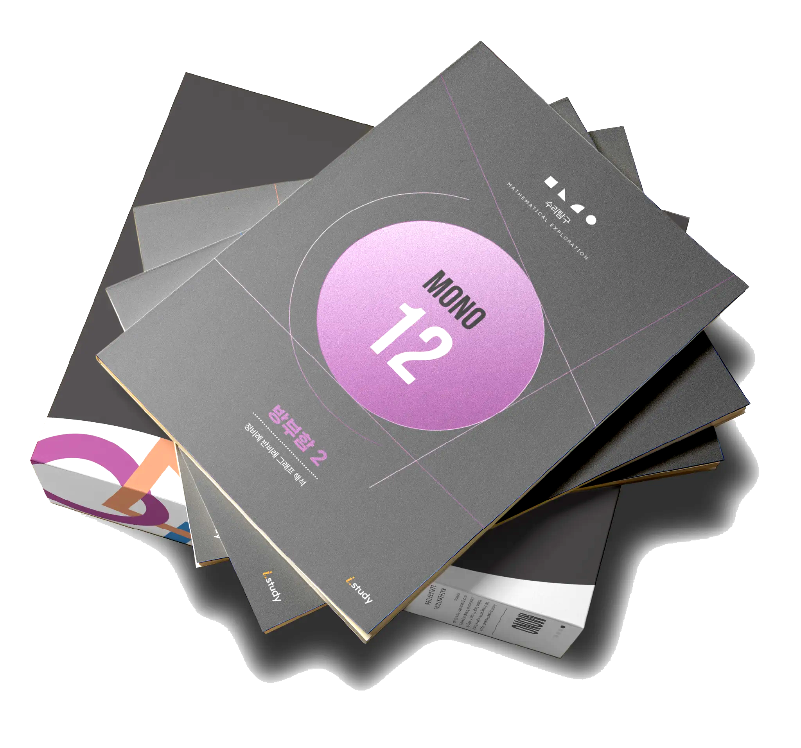

√
π
÷
%
∫
9월 개강 설명회 · 참석자 전원 특전
'26년판 사직동 중학교
'26년판 사직동 중학교
분석 자료집을 드립니다
초3~중2 학부모님을 위한
9월 정규 개강 설명회
×
+
TRACK RECORD
2026년 상반기,

2026년 상반기,
이 설명회에 다녀간 학부모
785명
2026년 상반기 설명회 누적 참석자
- 1월 개원설명회 (13회차)351명
- 2월 특별설명회85명
- 4월 중학교 분석 설명회210명
- 6월 대입 로드맵 설명회139명
그 설명회가, 9월에 다시 열립니다.
EXCLUSIVE BENEFIT
이번 설명회 참석자 특전
참석자 전원 제공
'26년판 사직동
'26년판 사직동
중학교 분석 자료집
- 과목별 A등급 비율 — 사직동 vs 대치동
- 7개 중학교 특목고 진학률 비교
- 사직동 학군 심층 분석 리포트
※ 촬영도 제한했던 자료입니다
Σ
∞
CURRICULUM
왜 9월이
왜 9월이
가장 좋은 시작인가
6개월 단위로 운영됩니다
수학은 개념이 벽돌처럼 쌓이는 과목입니다.
그래서 수리탐구는 새 과정이 시작되는 3월과 9월, 1년에 두 번만 정규 개강합니다.
9월에 시작하면 한 과정을 처음부터 완성할 수 있습니다.
다음 정규 개강은 내년 3월9월, 전 과정이 새롭게 개강합니다
| 과정 | 단계 | 수강 대상 |
|---|---|---|
| 모노–다이반 | 1단계 (첫 진입) | 중1-1 이수 |
| 다이–트라이반 | 2단계 | 중3-1 이수 |
| 테트라반 | 3단계 (완성) | 공통수학1 이수 |
아이의 현재 진도에 맞는 반에서 시작합니다.
반 배정은 진단검사로 학원에서 안내두 개의 수업으로 운영됩니다
· 수리탐구 (자체 교재 · 주 1회)
대표가 직접 집필하고 가르치는 심화 과정. 진단검사를 통해 준비된 학생만 함께합니다.
· 교과 (주 2회)
학교 진도에 맞춘 학년별 반.
대치에서 검증된 누테 학습법
누테(누적테스트) 학원은 두 가지가 다릅니다.
고등 일타 강사가 초·중등을 고등학생처럼 가르치고, 배운 것을 매달 누적 점검으로 놓치지 않습니다.
일찍 시작해 고등 수준으로 관리받은 아이가 앞서 나갑니다.
SPEAKER
교재를 만든 사람이

교재를 만든 사람이
직접 가르칩니다

i.study 수리탐구
이시용 대표
- 대치 현직 수리탐구 강사
- 수리탐구 48권 교재 직접 집필
- 유튜브 200만 조회
TEXTBOOK
국내 유일,
국내 유일,
고등 연계 중등 수학 교재

48권 · 3단계
하나로 연결된 수학 지도
SEMINAR INFO
설명회 안내
9월 정규 개강 설명회
- 1차 8/9(일) 오후 1시
- 2차 8/10(월) 오전 10시 30분
좌석이 한정되어 예약제로 운영됩니다
√
π